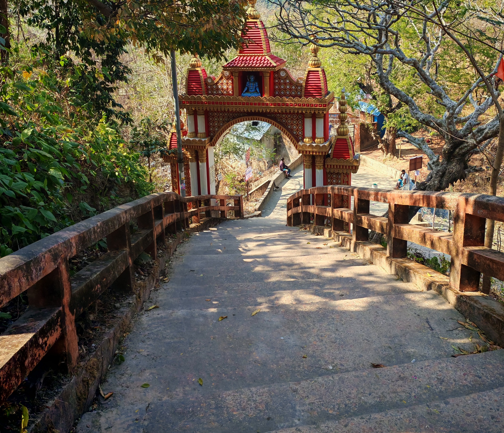
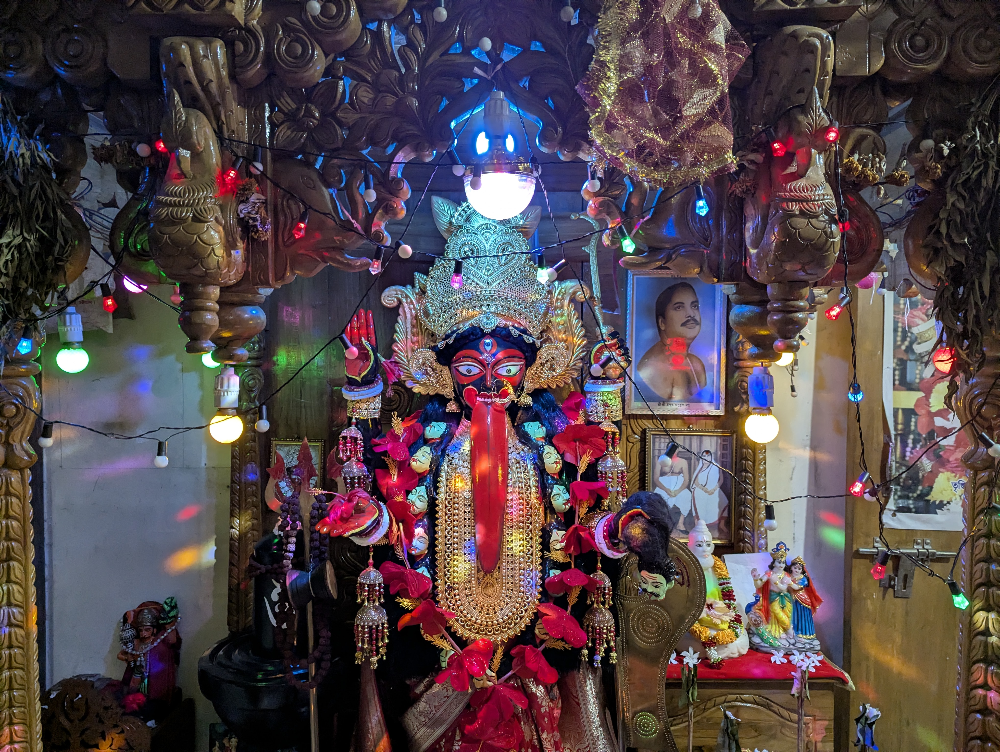
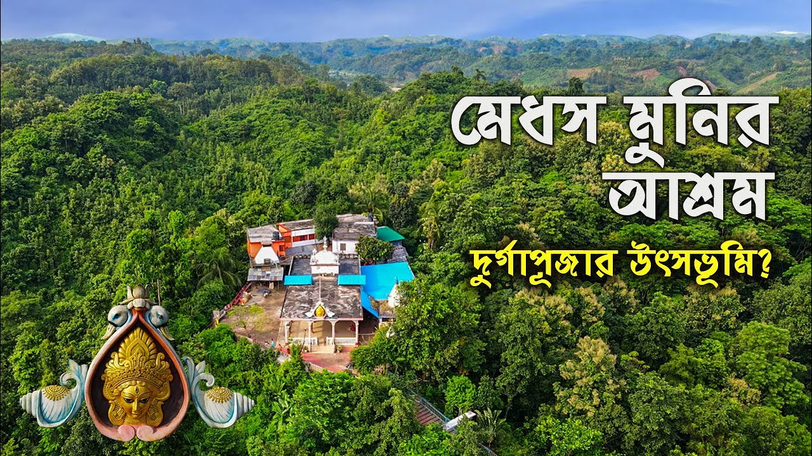

Heartfelt endeavor to rediscover and present the history, heritage, pandals, memories, and emotions of Chattogram’s soil and people
উৎসবের প্রতীক্ষা শুরু হয় অনেক আগেই। দিন গোনার সেই আনন্দ, প্রস্তুতির ব্যস্ততা আর উৎসবের আগমনের অপেক্ষা — প্রতিটি মুহূর্তকে আরও বিশেষ করে তুলতেই এখানে থাকছে বিভিন্ন পুজোর গুরুত্বপূর্ণ দিনগুলোর গণনা।
তিথি, নক্ষত্র, শুভক্ষণ ও পুজোর প্রয়োজনীয় দিনক্ষণ — পঞ্জিকা আমাদের উৎসবের সময়কে সঠিকভাবে জানতে সাহায্য করে।
প্রতিষ্ঠা → পরিবর্তন → ঐতিহ্যের বিস্তার → বর্তমান — প্রতিটি মন্দিরের নিজস্ব যাত্রা।
চট্টগ্রামের মন্দিরগুলো শুধু উপাসনার স্থান নয়; এগুলো বহন করে বহু বছরের ইতিহাস, সংস্কৃতি, ঐতিহ্য ও মানুষের ভালোবাসা। প্রাচীন মন্দির থেকে ঐতিহ্যবাহী পুজো—জেনে নিন তাদের প্রতিষ্ঠার ইতিহাস, কাহিনি ও সময়ের সঙ্গে গড়ে ওঠা ঐতিহ্য

বাংলাদেশের চট্টগ্রামের উত্তর-পূর্বে চন্দ্রনাথ পাহাড়ের উপরে অবস্থিত চন্দ্রনাথ মন্দির অন্যতম বিখ্যাত শক্তিপীঠ। অপরূপ প্রাকৃতিক সৌন্দর্যের লীলাভূমি চট্টগ্রামের সর্বোচ্চ পাহাড় চূড়ায় অবস্থিত এই মন্দির হিন্দু ধর্মাবলম্বীদের কাছে অত্যন্ত পবিত্র একটি তীর্থস্থান। হিন্দু পুরাণ অনুসারে, এখানে সতী দেবীর ডান হাত (দক্ষিণ হস্ত) পতিত হয়েছিল।পাহাড়ের পাদদেশে দেবী ভবানী এবং চূড়ায় শিব বা চন্দ্রনাথ—এই দুইয়ের উপস্থিতির কারণে স্থানটি শাক্ত এবং শৈব—উভয় সম্প্রদায়ের সাধকদের কাছেই সমানভাবে পূজনীয়।
পৌরাণিক উপাখ্যান ও গুরুত্ব:
সত্য যুগে প্রজাপতি দক্ষের মহাযজ্ঞে দেবাদিদেব মহাদেবকে অপমান করা হলে, দেবী সতী সেই অপমান সহ্য করতে না পেরে যজ্ঞকুণ্ডে আত্মাহুতি দেন। প্রাণহীনা স্ত্রীর শোকে উন্মত্ত মহাদেব সতীর মৃতদেহ কাঁধে নিয়ে বিশ্বব্যাপী তাণ্ডব নৃত্য শুরু করেন। সৃষ্টির ধ্বংস রোধ করতে ভগবান বিষ্ণু তাঁর সুদর্শন চক্র দ্বারা সতীর দেহ খণ্ডিত করেন। এতে দেবী সতীর দেহখন্ডসমূহ ভারতীয় উপমহাদেশের ৫১টি বিভিন্ন স্থানে পতিত হয় এবং এ সকল স্থানসমূহ তীর্থস্থান বা শক্তিপীঠ হিসেবে পরিচিতি পায়। হিন্দু ধর্মাবলম্বীদের বিশ্বাস অনুযায়ী, চন্দ্রনাথ পাহাড়ের এই পবিত্র স্থানে দেবী সতীর দক্ষিণ হস্ত বা ডান হাত পতিত হয়েছিল।
পাহাড়ের চূড়ায় অবস্থিত মূল মন্দিরে পৌঁছানোর আগে পাদদেশে বেশ কয়েকটি পবিত্র স্থান রয়েছে, যার মধ্যে অন্যতম হলো 'ব্যাসকুণ্ড'। পৌরাণিক কিংবদন্তি অনুযায়ী, মহামুনি ব্যাসদেব এই কুণ্ডের তীরে বসে অশ্বমেধ যজ্ঞ সম্পন্ন করেছিলেন এবং দীর্ঘকাল ধ্যানমগ্ন ছিলেন। ব্যাসকুণ্ডের পাশেই রয়েছে শতবর্ষী এক প্রাচীন বটবৃক্ষ, যাকে 'অক্ষয় বট' বলা হয়। ভক্তরা চন্দ্রনাথ দর্শনে যাওয়ার আগে ব্যাসকুণ্ডে পুণ্যস্নান সম্পন্ন করেন।
ইতিহাস ও নামকরণ:
রাজমালা অনুসারে প্রায় ৮০০ বছর পূর্বে গৌড়ের বিখ্যাত আদিসুরের বংশধর রাজা বিশ্বম্ভর সমুদ্রপথে চন্দ্রনাথে পৌঁছার চেষ্টা করেন। ত্রিপুরার শাসক ধন মাণিক্য এ মন্দির থেকে শিবের মূর্তি তার রাজ্যে সরিয়ে নেয়ার অপচেষ্টা করে ব্যর্থ হন।
ঐতিহাসিক তথ্য থেকে জানা যায়, প্রাচীন নব্যপ্রস্তর যুগে চট্টগ্রামে মানুষের বসবাস শুরু হয়। ষষ্ঠ ও সপ্তম শতাব্দীতে সম্পূর্ণ চট্টগ্রাম অঞ্চল আরাকান রাজ্যের অধীনে ছিল। এর পরের শতাব্দীতে এই অঞ্চলের শাসনভার চলে যায় পাল সম্রাট ধর্মপালের হাতে (৭৭০-৮১০ খ্রি.)। সোনারগাঁও-এর সুলতান ফখরুদ্দীন মুবারক শাহ্ (১৩৩৮-১৩৪৯ খ্রি.) ১৩৪০ খ্রিষ্টাব্দে এ অঞ্চল অধিগ্রহণ করেন। পরবর্তীতে ১৫৩৮ খ্রিষ্টাব্দে বাংলার সুলতানি বংশের শেষ সুলতান গিয়াসউদ্দীন মাহমুদ শাহ সুর বংশের শের শাহ সুরির নিকট পরাজিত হলে এলাকাটি পুনরায় আরাকান রাজ্যের হাতে চলে যায়। পরবর্তীতে পর্তুগিজরাও আরাকানীদের সাথে এই অঞ্চলের শাসনকাজে ভাগ বসায়। প্রায় ১২৮ বছরের রাজত্ব শেষে ১৬৬৬ খ্রিষ্টাব্দে মুঘল সেনাপতি বুজুর্গ উমেদ খান আরাকানী ও পর্তুগিজদের হটিয়ে দিয়ে অঞ্চলটি দখল করে নেন। পরবর্তীতে এটি ব্রিটিশ ইস্ট ইন্ডিয়া কোম্পানির নিয়ন্ত্রণে যায়। ১৯৭১ সালের মুক্তিযুদ্ধের সময় এটি ২ নম্বর সেক্টরের অধীনস্থ একটি রণকৌশলগত এলাকা হিসেবে গুরুত্বপূর্ণ ভূমিকা পালন করে।
এই পবিত্র ভূমির নামকরণের পেছনে ভাষাতাত্ত্বিক ও ঐতিহাসিক বিবর্তন রয়েছে। জনশ্রুতি অনুসারে, ত্রেতাযুগে রামচন্দ্রের বনবাসের সময় সীতাদেবী এখানে একটি কুণ্ডে স্নান করেছিলেন, যার ফলে অঞ্চলের নাম ‘সীতাকুণ্ড’ এবং মন্দিরের আদি নাম ‘সীতার কুণ্ড মন্দির’ হিসেবে পরিচিতি পায়। তবে আধুনিক গবেষণায় ধারণা করা হয়, ফারসি শব্দ "শাত-ই-কন্দ" (যার অর্থ পার্বত্য সমুদ্রসৈকত) থেকে কালক্রমে 'সীতাকুণ্ড' শব্দটির উৎপত্তি ঘটেছে। ব্রিটিশ শাসনামলে দাপ্তরিক নথিপত্রে এই নামই স্থায়ীভাবে গৃহীত হয়।
শিব চতুর্দশী মেলা:
এই মন্দিরে প্রতিবছর শিবরাত্রি তথা শিব চতুর্দশী তিথিতে বিশেষ পূজা হয়; এই পূজাকে কেন্দ্র করে সীতাকুণ্ডে বিশাল মেলা হয়। সীতাকুণ্ড চন্দ্রনাথ পাহাড় এলাকা বসবাসকারী হিন্দু ধর্মাবলম্বীরা প্রতি বছর বাংলা ফাল্গুন মাসে (ইংরেজি ফেব্রুয়ারি-মার্চ মাস) বড় ধরনের একটি মেলার আয়োজন করে থাকে, যেটি শিব চতুর্দশী মেলা নামে পরিচিত। এই মেলায় বাংলাদেশ, ভারতসহ পৃথিবীর বিভিন্ন দেশ থেকে অসংখ্য সাধু-সন্ন্যাসী নারী-পুরুষ যোগদান করেন। এই মেলা দোলপূর্ণিমা পর্যন্ত স্থায়ী থাকে। প্রতি বছর পবিত্র এই তীর্থস্থানে ১০-২০ লক্ষাধিক তীর্থযাত্রীর আগমন ঘটে বলে মেলা কমিটির ধারণা।
যাতায়াত ব্যবস্থা:
চন্দ্রনাথ মন্দিরে সড়ক ও রেলপথ—উভয় মাধ্যমেই যাতায়াত করা যায়। ঢাকা থেকে সড়কপথে সরাসরি সীতাকুণ্ড বাজারে যাওয়া যায়। এছাড়া রেলপথে 'ঢাকা মেইল' বা অন্যান্য আন্তঃনগর ট্রেনে সীতাকুণ্ড, ফেনী অথবা চট্টগ্রাম স্টেশনে নেমে সড়কপথে সীতাকুণ্ড বাজারে পৌঁছানো সম্ভব। চট্টগ্রাম শহর থেকে লোকাল বাস বা সিএনজি অটোরিকশার মাধ্যমে সহজেই এই তীর্থস্থানে যাতায়াত করা যায়।

চট্টগ্রামের বুকের দ্বিতীয় বুড়া কালি মায়ের প্রতিষ্ঠার গল্পটি আপনাদের কাছে তুলে ধরা হলো।
১৮-১৯ বছর বছর আগে কথা,
একজন মাতা পটিয়ার ধলঘাটের মা বুড়া কালী মন্দিরে গিয়েছিলেন, তারপর ওখান থেকে আসার পথে তার একটা ছবি খুব পছন্দ হয়, মায়ের মন্দিরে ওই ছবিটি আনার সময় উনি শুনতে পায় --
"তুই যে আমার ছবিটা নিয়ে যাচ্ছিস আমার নিত্য পূজা করতে পারবি তো? "
উনি বল্লো " পূজা করার চেষ্টা করবো মা । "
কালী মা বল্লো " যদি কিছু নাও পারিস, তাহলে প্রতিদিন অন্তত আমায় পান ফুল তেল দিয়ে পূজা করবি ।"
আর সেখান থেকেই মায়ের ঘট পুজো শুরু হয়। টানা ১৫ বছর ঘট পূজো চলল।
যে মায়ের পুজো করতো তার নাম ছিল বিশু ভট্টাচার্য, তার সাথে কথা হলো মায়ের বিগ্রহ বানিয়ে বাৎসরিক পুজো করার।
ওই ব্রাহ্মণ বলল " হা যে বানাতে পারবে তবে হুবাহু বুড়া কালী মায়ের সেম টু সেম হতে হবে কোনো রূপ চেঞ্জ করতে পারবা না।"
তারপর থেকে শুরু হলো চট্টগ্রাম শহরের বিভিন্ন প্রতিমা শিল্পীর কাছে যাওয়া, সবাই হতাশ করল।
শেষ পর্যন্ত আশাহত হয়ে যাওয়া হলো শ্রী অমল পালের কাছে। অমল পাল বাবু বলল,
" আমি চেষ্টা করব, ৯৫% হবে আশাকরি। "
অতটুকুতেই শিল্পীকে বায়না করা হলো। এরপরে প্রতিদিন যাওয়া হতো কাজ দেখার জন্য , দেখা হতো মায়ের বিগ্রহ তৈরির কাজ।
সবশেষে যেদিন মায়ের অধিবাস, মাকে আনতে যাওয়া হলো দেখলাম মায়ের সেই অভূতপূর্ব রূপ যেটা অমল পাল চট্টগ্রামে ৫০৪ বছর পরে মায়ের এই রূপটি বানালো মায়ের দ্বিতীয় বিগ্রহ।
এরপরে চার বছর ধরে মায়ের এই মাটির বিগ্রহে পুজো হয়েছে নিত্য পুজো বাৎসরিক পুজো অমাবস্যা পুজো চলতো।
তারপরে মাঝখানে আবারো চিন্তা হলো যে প্রতি বছর মাকে না বানিয়ে এর চেয়ে একটা শ্বেত পাথরের মায়ের প্রতিমা বানিয়ে ফেলা হোক। যে কথা সেই কাজ সেই অনুসারে চলে যাওয়া হলো ভারতের গয়াতে। ওখানে মায়ের শ্বেত পাথরের প্রতিমা তৈরি হলো। বর্ডার ক্রস করে ছয়মাস আগে মা চলে এসেছিল সদরঘাটের অমল পালের কারখানায়।
যেহেতু উনিই মায়ের প্রথম রূপ দান করেছিল, তো ওখানে রূপ দান করার পরে ওখানে মায়ের শেষ অঙ্গরাগ ফিনিশিং মায়ের সাজসজ্জা উনিই সব করেছিল।
আজ ৫০৮ বছর পরে আবার দ্বিতীয়বার মায়ের প্রতিস্থাপন হলো আমাদের বুড়া কালী মা ।"

মেধস মুনির আশ্রম বোয়ালখালী উপজেলায় করলডেঙ্গা পাহাড়ে অবস্থিত একটি গুরুত্বপূর্ণ হিন্দু তীর্থভূমি। বিশেষত বাঙালি হিন্দুর কাছে এটি একটি জনপ্রিয় তীর্থ।
ইতিহাস:
মার্কন্ডেয় পুরান, শ্রীশ্রীচণ্ডী বা দেবীমাহাত্ম্যম্ বা দেবীভাগবত পূরানে উল্লেখ রয়েছে ঋষি মেধসের এই আশ্রমের। মার্কন্ডেয় পুরান অনুযায়ী দেবী দুর্গা মর্তলোকে সর্ব প্রথম এই ঋষি মেধসের আশ্রমে অবতীর্ণ হন। ঋষি মেধসের এই আশ্রম বাংলাদেশ বঙ্গএর চট্টগ্রামে অবস্থিত। শ্রীশ্রীচণ্ডী গ্রন্থে কথিত রয়েছে, রাজা সুরথ ও বৈশ্য সমাধি, মেধস মুনির কাছেই প্রথম দেবীমাহাত্ম্যম্ এর পাঠ নেন এবং এই স্থানে প্রথম দুর্গাপুজো করেন।
আবিষ্কার:
বরিশালের গৈলা অঞ্চলের পণ্ডিত জগবন্ধু চক্রবর্তীর বাড়িতে ১২৬৬ বঙ্গাব্দে ২৫ অগ্রহায়ণ মাসে চন্দ্রশেখর নামে একপুত্র সন্তানের জন্ম হয় । জন্মের দু’বছর পর জগবন্ধু মারা যান। মায়ের অনুরোধে চন্দ্রশেখর ১৪ বছর বয়সে বিয়ে করেন মাদারীপুরের রাম নারায়ণ পাঠকের কন্যা বিধুমুখীকে। ছয় মাস পর মারা যান স্ত্রী। এর কিছুদিন পর মাও মারা যান। সংসারে আপন বলতে আর কেউ রইল না। একাকিত্ব জীবনে এসে চন্দ্রশেখর নানা বেদ শাস্ত্র পাঠ করে হয়ে ওঠেন পরিচিত পণ্ডিত। তখন নাম হলো শীতলচন্দ্র। তিনি মাদারীপুরে প্রতিষ্ঠা করেন সংস্কৃত কলেজসহ নানা শিক্ষাপ্রতিষ্ঠান। পরবর্তীতে যোগীপুরুষ স্বামী সত্যানন্দের সাথে সাক্ষাতের পর চন্দ্রশেখরের মনে চন্দ্রনাথ দর্শনের আগ্রহ জন্মে। তিনি চলে আসেন চট্টগ্রামের সীতাকুণ্ডের চন্দ্রনাথ পাহাড়ে। সেখানে তিনি বৈরাগ্য ধর্ম গ্রহণ করেন। ততদিনে চন্দ্রশেখর হয়ে ওঠেন বেদানন্দ স্বামী। সেখানে যোগবলে বেদানন্দ দর্শন লাভ করেন চন্দ্রনাথের (শিব)। চন্দ্রনাথ সেই দর্শনে বেদানন্দকে পাহাড়ের অগ্নিকোণে দৃষ্টি নিবদ্ধ করার আদেশ দিয়ে বলেন, ‘দেবীর আবির্ভাবস্থান মেধস আশ্রম পৌরাণিক শত সহস্র বছরের পবিত্র তীর্থভূমি। কালের আবর্তে সেই পীঠস্থান অবলুপ্ত হয়ে পড়েছে। তুমি স্বীয় সাধনবলে দেবীতীর্থ পুনঃআবিষ্কার করে তার উন্নয়নে মনোনিবেশ কর। দেবী দশভুজা দুর্গা তোমার ইচ্ছ পূরণ করবে।’ দৈববলে প্রভু চন্দ্রনাথের আদেশে বেদানন্দ স্বামী পাহাড়-পর্বত পরিভ্রমণ করে পবিত্র এ তীর্থভূমি মেধাশ্রম আবিষ্কার করেন।
মেধস মুনি রাজা সুরথ ও বৈশ্য সমাধিকে প্রথম দুর্গোৎসবের পাঠ দিয়েছিলেন। রাজা ও বৈশ্য নিজেদের দুরবস্থা থেকে মুক্ত হতে চট্টগ্রামের মেধসের এই আশ্রমে মাটি দিয়ে দুর্গা প্রতিমা নির্মাণ করেন এবং মর্তলোকে প্রথম দুর্গাপুজোর সূচনা করেন। সেই থেকে আজ অবধি, এখানে দুর্গাপুজো হয়ে আসছে। এটি বাংলাদেশের হিন্দু বাঙালিদের অন্যতম বৃহৎ তীর্থস্থান। অনুমান করা হয়, এই স্থান থেকেই সমগ্র বঙ্গদেশে বাঙালিদের মধ্যে ও পরে সমগ্র ভারতে অন্যান্য জাতিগোষ্ঠীর মধ্যে দুর্গাপুজো জনপ্রিয়তা লাভ করে।
১৯৭১ সালের ধ্বংসলীলা:
১৯৭১ সালে পূর্ব পাকিস্তান(বর্তমান বাংলাদেশে) মুক্তিযুদ্ধ চলাকালীন পাকহানাদার বাহিনী এই আশ্রম ও আশ্রম সংলগ্ন মন্দির ধ্বংস করে দেয়। পরে স্থানীয় হিন্দুদের সহযোগিতায় এই মন্দির ও আশ্রম পুনঃনির্মাণ করা হয়।
বর্তমান মঠ ও মন্দির:
আশ্রমে চণ্ডী মন্দির, শিব মন্দির, সীতা মন্দির, তারা কালী মন্দিরসহ ১০টি মন্দির রয়েছে। রয়েছে সীতার পুকুর।আশ্রমের প্রধান ফটক দিয়ে প্রায় আধা কিলোমিটার গেলে ওপরে ওঠার সিঁড়ি। প্রায় ১৪০টি সিঁড়ির ধাপ বেয়ে ওপরে উঠলে মেধস মুনির মন্দির চোখে পড়বে। এই মন্দিরের পরই দেবী চণ্ডীর মূল মন্দির। এর একপাশে সীতার পুকুর, পেছনে রয়েছে ঝরনা। মন্দিরের পেছনে সাধু সন্ন্যাসী ও পুণ্যার্থীদের থাকার জন্য রয়েছে দোতলা ভবন। প্রায় ৬৮ একর জায়গা জুড়ে স্থাপিত হয়েছে এই মন্দিরে প্রতিবছর মহালয়ার মাধ্যমে দেবী পক্ষের সূচনা হয় এই মন্দিরে।
খুঁটিপূজা থেকে প্রস্তুতি, প্রতিমা নির্মাণ থেকে মণ্ডপসজ্জা, আয়োজন থেকে উৎসব—চট্টগ্রামের বিভিন্ন পুজোকে ঘিরে প্রতিটি নতুন খবর ও মুহূর্ত পৌঁছে যাবে আপনার কাছে। আপনার আশেপাশের পুজোয় কী হচ্ছে, থাকুন সবসময় আপডেটেড
একটি ছবি কখনো শুধু একটি ছবি নয়—তার মধ্যে লুকিয়ে থাকে একটি মুহূর্ত, একটি অনুভূতি কিংবা একটি গল্প। মানুষের আনন্দ, মণ্ডপের সৌন্দর্য, প্রতিমার শিল্প কিংবা উৎসবের অদেখা কোনো মুহূর্ত—আপনার ক্যামেরায় ধরা পুজোর গল্পকে তুলে ধরুন সবার সামনে
বিজয়ী হতে আজই অংশগ্রহন করুন
প্রতিটি ছবি একটি করে গল্প — আর প্রতিটি গল্প বেঁচে থাকুক পরের পুজোর অপেক্ষায়। আমাদের সাথে এই যাত্রায় থাকার জন্য ধন্যবাদ।
— চট্টলার পুজো টিমঢাকের বোল, কাঁসর-ঘণ্টা, শঙ্খধ্বনি, আরতির সুর কিংবা পুজোর সঙ্গে জড়িয়ে থাকা প্রিয় গান—উৎসবের শব্দগুলোই অনেক সময় আমাদের ফিরিয়ে নিয়ে যায় পুরোনো স্মৃতির কাছে। শুনুন পুজোর সঙ্গে মিশে থাকা সেই চেনা সুর ও শব্দের গল্প
কখনো কয়েক সেকেন্ডের একটি ভিডিওই ফিরিয়ে আনতে পারে পুরো একটি উৎসবের স্মৃতি। আলো, সাজসজ্জা, প্রতিমা, মণ্ডপ, মানুষের আনন্দ আর পুজোর প্রাণবন্ত মুহূর্তগুলোকে ছোট ছোট reels-এর মাধ্যমে দেখুন নতুনভাবে
বিভিন্ন দেব-দেবীর কাহিনি, পৌরাণিক উপাখ্যান, পুজোর আচার, মন্ত্র ও শ্লোক—প্রজন্মের পর প্রজন্ম ধরে চলে আসা জ্ঞান, বিশ্বাস ও ঐতিহ্যকে জানুন সহজভাবে। পুজোর পেছনের গল্পগুলোকে আবিষ্কার করুন নতুন করে
The Devi Mahatmya, part of the Markandeya Purana, is the foundational scripture behind Durga Puja — the story of the Goddess's battle against Mahishasura. Full retelling to be sourced from a verified translation.
Regional Shiva stories connected to Chattogram's temple traditions, often recounted during related festival observances. Placeholder — to be replaced with verified regional narratives.
Stories of Kali's fierce compassion, told across Bengal's Shakta tradition and closely tied to the region's Kali Puja observances.
পূজা শুরুর সংকল্প মন্ত্র — পূজারীর নিয়ত ও উদ্দেশ্য ঘোষণার আনুষ্ঠানিক অংশ।
ফুল অর্পণের সময় পাঠ করা মন্ত্র, ভক্তের শ্রদ্ধা নিবেদনের প্রতীক।
মণ্ডপ দর্শনার্থী অপরাগামিনীর কাছে পৌঁছে যাক কাছাকাছি মণ্ডপের লোকেশন
প্রস্তুতির প্রথম দিন থেকে উৎসবের শেষ মুহূর্ত পর্যন্ত—প্রতিটি পুজোর রয়েছে নিজস্ব একটি গল্প ও যাত্রা। সেই আয়োজন, রীতি, সংস্কৃতি, মানুষের অংশগ্রহণ এবং অসংখ্য ছোট-বড় মুহূর্তের মধ্য দিয়ে ঘুরে দেখুন পুজোর সম্পূর্ণ পথচলা
মহালয়ার ভোর মানেই এক অন্যরকম আবহ। চণ্ডীপাঠের মন্ত্র, সেই চিরচেনা কণ্ঠ, ভোরের নিস্তব্ধতা আর বাঙালির দীর্ঘদিনের স্মৃতি — 'Echoes of Chandi' সেই ঐতিহ্য, নস্টালজিয়া ও আধ্যাত্মিক অনুভূতির এক বিশেষ সংরক্ষণ।